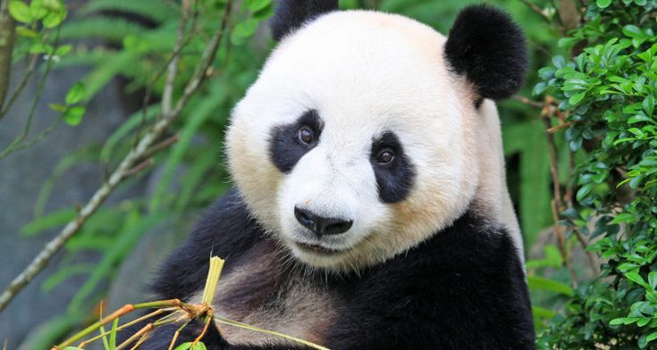

Больша́я па́нда, бамбуковый медведь (Ailuropoda melanoleuca), млекопитающее семейства медвежьих. Единственный вид в одноимённом роде. Длина тела 120–180 см, хвоста около 12 см; высота в холке до 70 см, масса до 160 кг. Самцы крупнее самок. Туловище массивное; конечности стопоходящие, задние сильно укорочены. Для удержания в лапах гладких стеблей бамбука служит особый вырост на запястье, играющий роль «дополнительного» пальца. Голова массивная; глаза небольшие; уши крупные, округлые, стоячие. Мех длинный, густой, мягкий. Окраска в основном белая; пятна вокруг глаз, уши и широкая полоса вокруг тела на уровне плеч – чёрно-коричневые. Обитает в центральной части Китая (провинции Сычуань, Ганьсу, Шэньси); населяет горные леса с густыми зарослями бамбука на высоте 1200–2000 (до 3500) м. Ведёт главным образом наземный образ жизни, хорошо лазает по деревьям. Убежищем служат дупла деревьев, расщелины скал, пещеры. Активна днём и в сумерках. В спячку не впадает; зимой спускается ниже по склонам.
Питается главным образом побегами, листьями и корнями определённых видов бамбука; Изредка поедает падаль, личинки насекомых, яйца птиц. На кормёжку затрачивает ежедневно до 16 ч, потребляя за это время до 18 кг корма Держится обычно поодиночке. Метит свою территорию пахучими выделениями и царапинами на коре деревьев. Спаривание происходит весной, самки приносят потомство с интервалом в 2 года. В этот период медведицы издают различные звуки, напоминающие блеяние, стоны, лай. В помёте 1–2 детёныша. Большая панда внесена в Красную книгу; в начале 21 в. её поголовье в естественных условиях не превышало 1500 особей. Причины сокращения численности – вырубка лесов, одновременное отмирание после цветения нескольких видов бамбука и браконьерская охота (главным образом ради шкуры). Меры по спасению большой панды включают охрану природных популяций, разведение в неволе и содержание в питомниках с целью адаптации к естественным условиям при реинтродукции.
назад далее